Содержание лекции
Первая лекция представляет аспекты применения векторной графики в практических направлениях деятельности.
Темы лекции
- Применение векторной графики в сферах деятельности
- Профессиональные графические редакторы
- Терминология
- Операции с векторной графикой
- Рекомендуемая литература
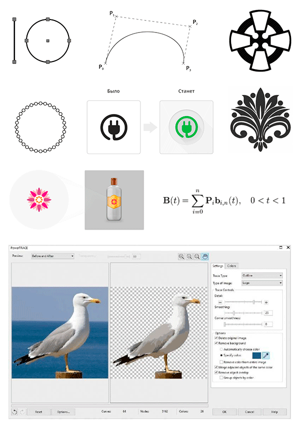
Применение векторной графики
Векторная графика имеет широкое распространение в повседневной жизни для решения гражданских и промышленных целей.
Современные профессии включают в повседневные задачи применение различных форм векторной графики напрямую или опосредованно.
Далее по тексту представлены наиболее популярные сферы применения векторной графики. В ходе лекции мы рассмотрим данные направления с точки зрения применения растровой и векторной графики.
|
Архитектура |
Брендирование и реклама |
|
Верстка и иллюстрирование |
Городская навигация |
|
Гравировка |
ИТ: Веб-интерфейсы |
|
Картография |
Полиграфия |
Архитектура
На практике для решения задач архитектуры по строительству гражданских и промышленных зданий применяются специализированные пакеты инженерной векторной графики Autocad и т.д.
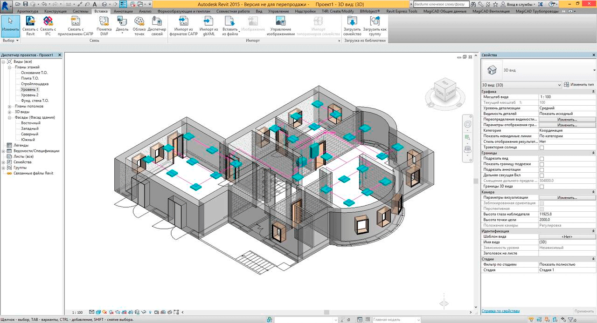
Рис.1. Архитектурное 3D моделирование в программном обеспечении.На слайде представлено выстраивание 3D моделей на основе совмещения векторных проекций в пространстве X, Y, Z. Инженер-проектировщик (по чертежам архитектора) получает реалистичную модель зданий с возможностью визуализации, масштабирования, детализации узлов конструкции с целью получения максимально качественного результата при строительстве здания на объекте.
Брендирование и реклама
Активное производство товаров народного потребления (от косметики до бытовой техники) требует активной рекламы и брендирования.
Рис.2. Пример брендирования на упаковке косметического товара.
Брендирование — это комплекс задач маркетинга, направленный на создание устойчивого запоминаемого торгового знака и фирменного стиля для выпускаемой продукции.
Происходит от слова «brand» (товарный знак, торговая марка).
Реклама — вид маркетинга для привлечения внимания к объекту рекламирования для повышения внимания и получения коммерческой выгоды (повышение спроса, продажи).
Векторная графика применяется для точного воспроизведения (с высоким разрешением 300 точек/дюйм) представленных макетов в результате.
На практике дизайнер по рекламе выполняет техническое задание маркетолога для решения задач заказчика.
Например представление потребителям нового средства для ухода за волосами (шампуня-кондиционера). Как результат яркая и броская визуальное представление позволяет повысить продажи товара в розничных магазинах (торговых сетей).
Верстка и иллюстрирование
Все печатные издания (книги, журналы и т.д.) требуют качественного исполнения (строго по предоставленным макетам верстки). Иллюстрирование требуется для визуализации образов и привлечения внимания читателей.
Рис.3. Пример оформления обложки книги с применением векторной графики.
Верстка — это технический структурный стандартизированный монтаж оригинал-макета из ряда элементов: заголовков, текста, примечаний, таблиц, иллюстраций и т.д.
На практике верстка классифицируется на два типа:
- Верстка для печатных изданий:на основе векторных форматов Adobe Indesign, Adobe Illustrator, Corel Draw и т.д.
- Верстка для веб-сервисов и веб-сайтов:на основе технологий HTML5, CSS3, JavaScript и векторной SVG графики.
Городская навигация
Ориентирование на местности в условиях плотной городской застройки требует продуманной навигации и логистики с учетом загруженности пассажиропотока на дорогах общего пользования.
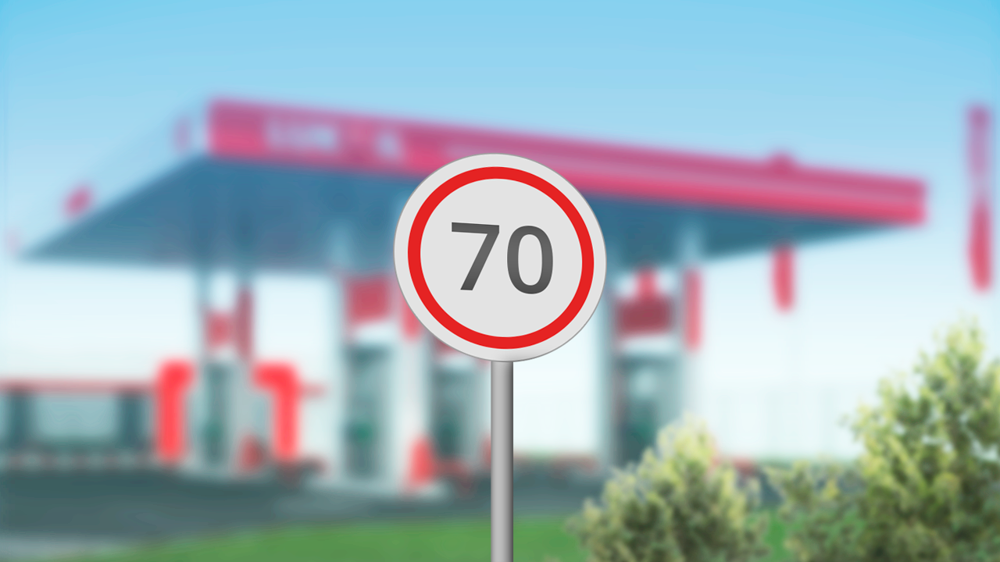
Рис.4. Применение векторной графики для городской навигации.Появление сложных по логистике районов, высотных зданий и разветвленной инфраструктуры требует удобной навигации с целью легкости ориентирования на местности.
Векторная графика позволяет реализовать визуально четкие дорожные знаки в соответствии с утвержденной системой знаков дорожного движения.
Правила оформления и размещения дорожных знаков определяются стандартом ГОСТ Р 52290-2004 «Технические средства организации дорожного движения. Знаки дорожные. Общие технические требования».
Практическое применение стандарта ГОСТ позволяет реализовать необходимые макеты в векторной графике для согласования и дальнейшей установке в местах дорожной развязки.
На практике используется следующий софт:
- Программный пакет для редактирования векторной графики Corel Draw.
- Обработка векторной графики в формате CDR.
Гравировка на металле, дереве, пластике
Лазерная гравировка на твердых материалах (металле, дереве, пластике) применяется для нанесения технических маркировок, орнаментов, барельефных (3D) изображений с прецизионной точностью и высочайшим качеством.
Рис.5. Лазерная гравировка для металлических компонентов и оборудования
Стандартная технология нанесения лазерной гравировки:
- Подготовленный в векторном редакторе макет (Corel Draw) интерпретируется в специальный софт для печати гравировки на материале (выбор типа материала, прецизионная точность и т.д.)
- Нанесение гравировки выполняется на станке с помощью сфокусированного лазерного луча.
Исполнение специалистом лазерной гравировки, следуя выше описанной технологии, позволяет на практике получить интересные визуальные решения для оформления металлических, деревяных и пластиковых поверхностей гражданских и промышленных объектов.
ИТ: веб-интерфейсы
Современная векторная SVG графика активно применяется в веб- интерфейсах (визуальных оболочках для пользователей) в виде функциональных элементов (числовых и текстовых кнопок, статус баров loading и т.д.)
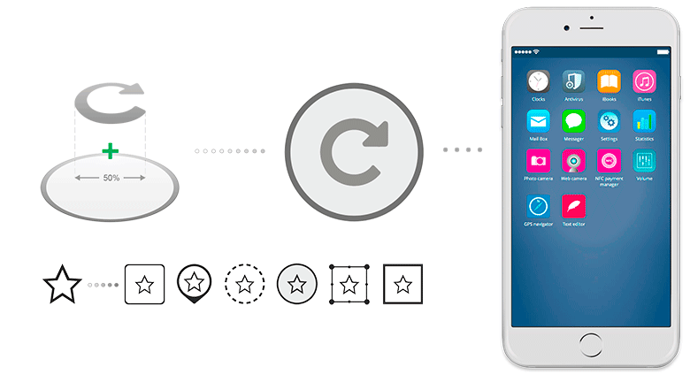
Рис.6. Схема редактирования, применения векторной графики для веб и мобильных интерфейсов.Дизайн интерфейсов интересен тем, что в приложениях iOS, Android на протяжении 10 лет меняются тенденции.
Веб-интерфейс в зависимости от тенденций: Material Design (Google), Metro Design (Microsoft) и т.д. Эти визуальные стили принимают за основу для оформления новых ИТ продуктов.
Глифовые изображения получают в новых продуктах каждый раз новый визуальный облик для пользователей.
На схеме справа фон и стиль оформления меняется, грифовые изображения остаются практически неизменными.
Работа с векторной графикой выполняется:
- Визуальные решения подготавливаются в редакторах FIGMA, Adobe Photoshop, Adobe XD и т.д.
- Экспорт графики из графического редактора выполняется в форматы SVG, PNG, PDF, Vector Drawable в зависимости от принадлежности платформе iOS, Android, PC или Mac.
- В исходном коде приложений редактируются источники SVG кода.
Картография
Технология картографии за последние годы получила значительные возможности по точности воспроизведения границ и рельефа с учетом детализации состава областей воспроизведения для карт и маршрутов.
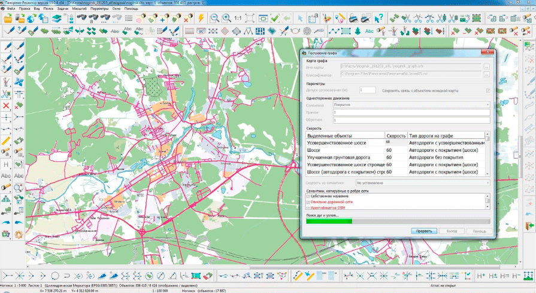
Рис.7. Экран редактирования карты в картографическом программном обеспечении.Сложность работы картографа заключается в том, что воспроизведение детальных карт местности формируется на основе ряда фото, скан- и электронных носителей (разного срока давности) с указанием границ участков, точностью воспроизведения до 1 м.
Построение карты местности выполняется на основании слоев (полигонов областей участков - дороги, леса, парковки, озер и т.д.) Все эти элементы формируют композицию с учетом дорожной развязки и точек интересов (POI), фактически объектов инфраструктуры, необходимой для нормальной жизни в данной местности. Построение полигонов (участков местности) выполняется на основании GPS-координат узловых точек (границ участка) с заданной точностью.
Современные ГИС системы обладают широкими справочными возможностями для уточнения данных о каждом объекте на карте по запросу из поисковой строки: адрес, телефон, GPS-координаты объекта, режим работы и т.д.
Векторная графика служит основой для построения слоев участков, дорог, точек интересов и т.д. Хранение данных в различных форматах в зависимости от пакета редактора для карт. Программы и веб-сервисы маршрутизации работают на основе картографии и данных о пассажиропотоке для вычисления оптимальной логистики в режиме реального времени.
Полиграфия
Все выставки, рекламные физические носители и упаковка продукции требует красочной упаковки.
Рис.8. Брендирование продукции полиграфическими способами: глянцевая печать на этикетке, термопечать, шелкография.
Полиграфия решают основные поставленные задачи рекламы и брендирования:
- печать на глянцевой и матовой бумаге,
- перфорация,
- шелкография,
- фигурные вырубки на картоне и т.д.
Технические возможности точного воспроизведения графики
Возможности современной полиграфии позволяют выполнить даже визуально сложные дизайн-решения.
Для воспроизведения с точностью (1:1) как в макете требуется векторная графика (т.к. макеты в векторном формате относительно «легкие» по размеру, редактируются по запросу без особого труда, требуется профессиональная предпечатная подготовка для настройки макета и печатной машины под требования заказчика.
Профессиональные графические редакторы
Классифицируем основные редакторы для работы с векторной графикой по специализации применения.
Иллюстрирование
- Adobe Illustrator
- Xara Designer
Дизайн веб-интерфейса
- Figma
- Sketch
- Adobe XD
Верстка
- Adobe Indesign
- Corel Draw
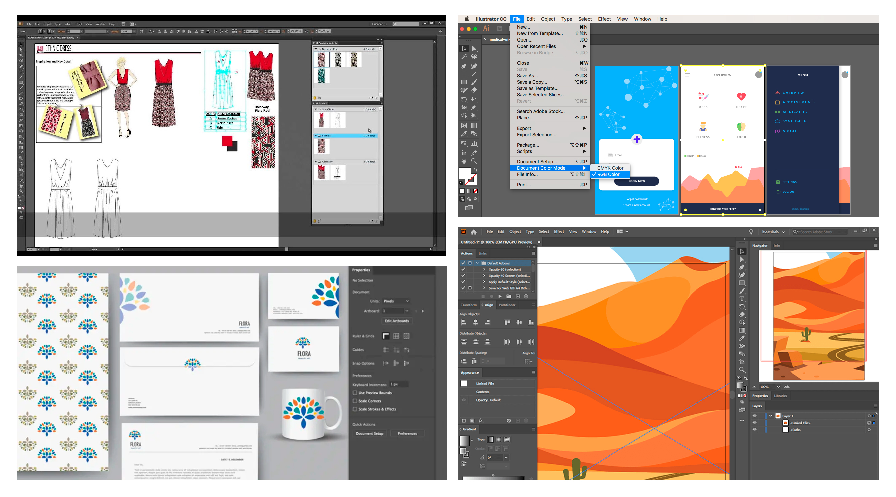
Рис.9. Скриншоты графического редактора Adobe Illustrator в применении (слева направо): моделирование одежды, веб-интерфейсы, дизайн упаковки, иллюстрирование.В зависимости поставленных задач выбор редактора отличается в пользу оптимального решения. Для интеграции решений из одной программы в другую используют совместимые форматы PDF, EPS и т.д.
Векторные и растровые форматы графики
| Векторные форматы | Растровые форматы |
|
CDR Corel Draw AI Adobe Illustrator SVG Scalable Vector Graphics DWG Drawing 2D / 3D EPS Encapsulated PostScript PDF Portable Document Format PICT Macintosh QuickDraw Picture Format |
JPG Joint Photographic Experts Group PNG Portable Network Graphics TIFF Tagged Image File Format PICT Macintosh QuickDraw Picture Format BMP Bitmap Picture GIF Graphics Interchange Format |
Терминология
В зависимости от сферы применения векторной графики данному направлению сопутствует специальная терминология.
Для каждого специалиста важно обладать достаточным и необходимым лексиконом для диалога на уровне профессионала по выбранной специальности.
Для этого приведем несколько терминов из различных сфер деятельности в приложении к векторной графике.
Для рассмотрения в данной лекции:
Для самостоятельного рассмотрения:
Кривые Безье в полиграфии, иллюстрировании
Кривая Безье определяется массивом точек и задается векторным уравнением:
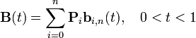
Кривые, предложенные в 60-х годах XX века независимо друг от друга Пьером Безье из автомобилестроительной компании «Рено» и Полем де Кастельжо из компании «Ситроен», где применялись для проектирования кузовов автомобилей.
Характеристика кривых Безье
- Используются для построения замкнутых векторных фигур сложной скругленной формы.
- Имеют цвет фона, цвет и толщину границ.
- Форма кривой Безье зависит от углов направления векторов начальной, промежуточных и конечной точек.
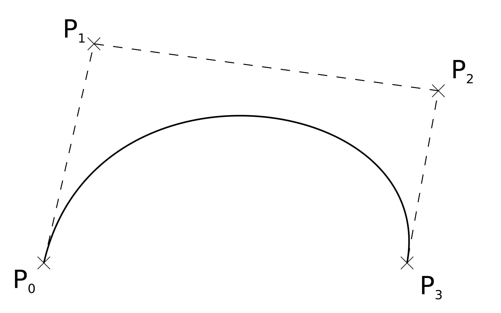
Пример кривой Безье для отрисовки дуговой фигурыУзловые точки в иллюстрировании
Узловая точка — особая точка кривой для отображения углов кривой Безье, векторной фигуры и линейного вектора.
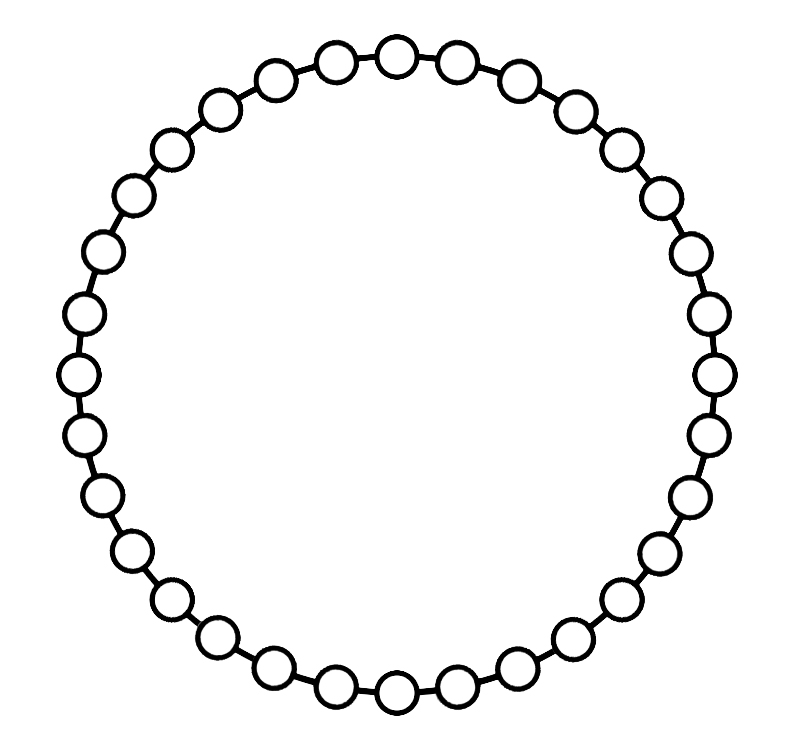
- Чем больше точек на дюйм, тем выше точность при масштабировании.
- Чем больше точек на дюйм, тем больше вес экспортируемого векторного файла.
Глифы в полиграфии и иллюстрировании)
(др.-греч. γλύφω «вырезаю; гравирую») — элемент письма, конкретное графическое представление графемы, иногда нескольких связанных графем — составной глиф, — или только части графемы, например — диакритический знак.
С древних времен применялись как элементы письменности для представления значимых явлений, религиозных знаков, событий и т.д.
В современном мире применяются как графическая основа для пиктограмм в интерфейсах, в иллюстрировании и маркировках продукции.
Кельский крест — религиозный символ, характерный для кельтов Британских островов вариант христианского креста с наложенным на него кругом.
Полигоны в картографии
Полигон (от др.-греч. πολυ- «много» + γωνιἀ «угол»; πολυγωνος. букв. «многоугольник») — специально отведённый государством и оборудованный участок местности, воздушной или морской поверхности (участок суши, неба или моря).
В картографии полигоны (замкнутые фигуры сложной формы) применяются для отображения от малых до крупных географических территорий (от садового участка до границ городов, регионов и стран).
Визуализация полигона объекта недвижимости на карте
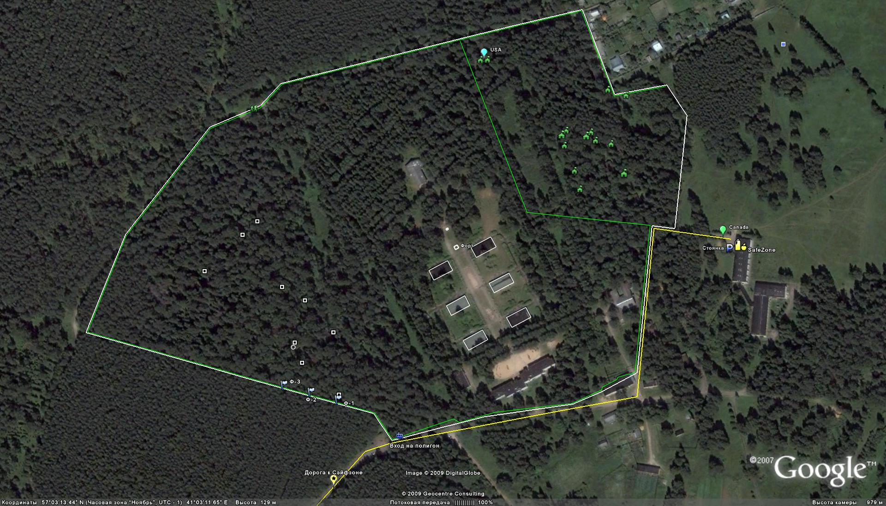
Фрагмент карты Google с определенными границами участка (поселения).Точки интересов POI в картографии
Точки интересов (от англ. points of interests) — это условное географические точки на карте местности для отображения объектов инфраструктуры.
Основные характеристики точек интересов:
- Точки POI имеют точные GPS-координаты.
- Тип точки.
- Дополнительная информация (по содержанию объекта).
Визуализация точек POI на карте местности
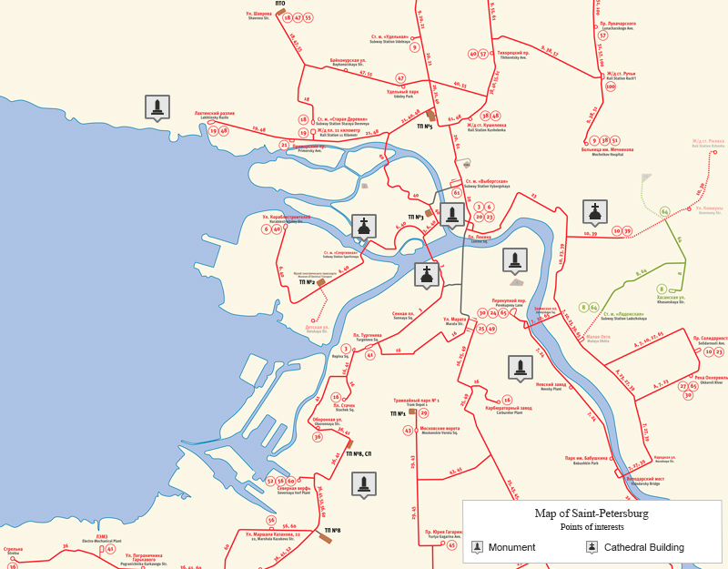
Точки интересов POI на карте местностиОперации с векторной графикой
Для рассмотрения в данной лекции:
- Трассировка
- Экспорт в формат SVG
- Стилизация
- Предпечатная подготовка PrePress
Для самостоятельного рассмотрения:
- Импорт векторной графики (в дизайн макет)
- Растеризация векторного изображения
- Наложение SVG маски
- Сжатие SVG файла
Трассировка
По определению трассировка — это цифровое преобразование растрового (точечного) изображения в векторный формат воспроизведения графики.
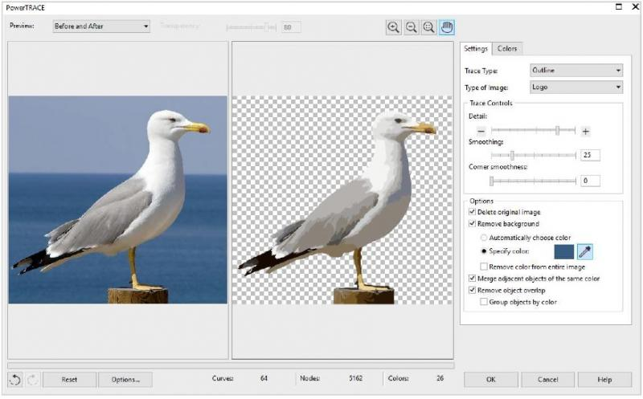
Рис.10. Трассировка изображения в приложении PowerTrace.Трассировка изображения позволяет преобразовывать растровые изображения (JPEG, PNG, PSD и т. д.) в векторную графику.
Трассировка по смыслу выполняет изменение структуры изображения из точек в векторные формы (линии, кривые, полигоны) на основе существующего графического объекта. Обычно трассировка выполняет с заданной точностью, что позволяет добиться заданной детализации воспроизведения результата (в векторном виде).
Применяется для работы с графикой для крупных форматов, где необходимы изображения без пикселизации (разбиения на точки).
Оптимизация
При необходимости воспроизведения в веб-интерфейсе множества графических элементов в векторном формате SVG, растровом PNG и т.д. требуется оптимизация кода изображений.
Использование специальных утилит позволяет обеспечить оптимальную загрузку на клиентском устройстве без задержки на долгую загрузку.
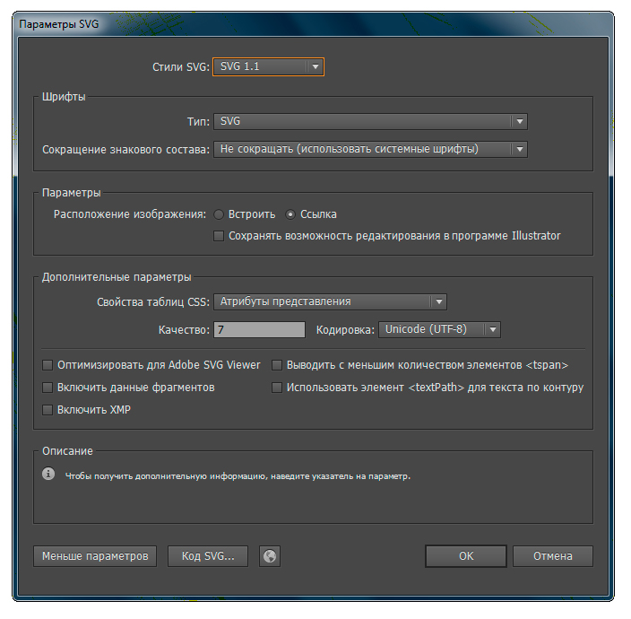
Рис.11. Технические параметры экспорта векторной графики в формат SVG.Экспорт в формат SVG
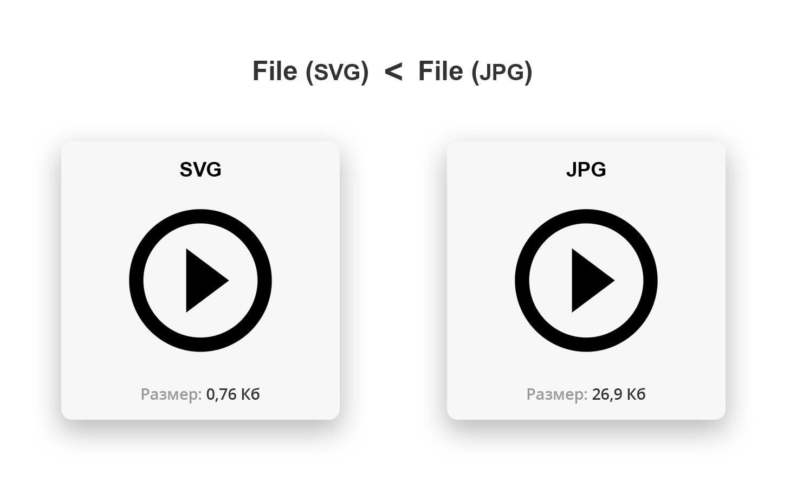
Рис.12. Технические параметры экспорта векторной графики в формат SVG.Результат: снижение веса файла графики без потерь за счет сжатия форматирования и стилей в теле документа (механическое убирание отступов и пробелов нужных для семантической верстки - в SVG документе).
Было: файл SVG = 26,9 Кб,
Станет: файл SVG = 0,76 Кб.
По результату сжатия без потерь формат SVG — оптимальное решение для хранения графики веб и мобильных интерфейсов.
Стилизация
В техническом задании к исполнению макетов может быть задан определенный стиль (со скошенными тенями от объектов, скругленные формы и т.д.)
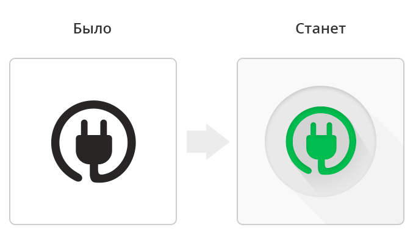
Рис.12. Стилизация векторного изображения (в дизайне веб-интерфейса).Приведение макета к заданному стилю — это стилизация, что требует исполнения на стороне дизайнера (работа с векторными файлами макетов).
В результате продукт с графическим интерфейсом характеризуется стилизованным под определенный стиль, например: Material Design и т.д.
Предпечатная подготовка PrePress
В полиграфии для воспроизведения с точностью (1:1) как в макете требуется детально-спроектированные макеты векторной графики (т.к. макеты в векторном формате относительно «легкие» по размеру, редактируются по запросу без особого труда.
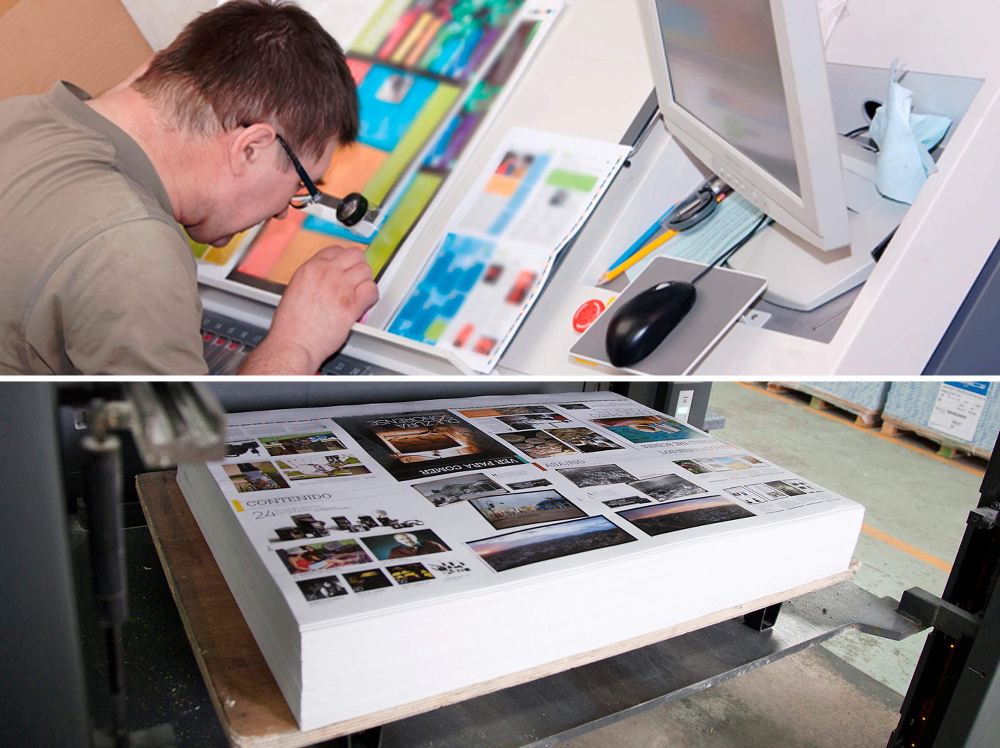
Рис.13. Фотографии с полиграфического производства по предпечатной подготовке PrePress.Требуется грамотная предпечатная подготовка для настройки макета и печатной машины под требования заказчика.
Допечатная подготовка выполняется с применением технологических требований:
- точные цвета в палитре Pantone (CMYK),
- глубина «черного цвета (без превышения по насыщенности),
- наличие всех шрифтов в кривых без редактируемых источников,
- четкое соответствие модульной сетке без вылетов за границы блоков и линий отреза по формате.
Рекомендуемая литература
- Типографика: шрифт, верстка, дизайн. Джеймс Феличи. Перевод с английского и комментарии С. И. Пономаренко Санкт-Петербург «БХВ-Петербург» 2014. УДК 004.915 ББК 32.973.26-018. 2. Феличи Дж. Типографика: шрифт, верстка, дизайн: Пер. с англ. — 2-е изд., перераб. и доп.
- Основы формальной картографии. Издательство «Научная мысль», Автор: Кравченко Юрий Афанасьевич. Год издания: 2020 г. ISBN: 978-5-16-012720-0. Вид оформления: переплёт 7БЦ. Издательство: НИЦ ИНФРА-М.
- Организация полиграфического производства. Аникина К.А. формат djvu размер 2.44 МБ добавлен 08 мая 2010 г. М.: "Книга", 1981.- 320 с.
- Технология послепечатных процессов. Часть 1. Арапова С.П., Тягунов А.Г., Арапов С.Ю. ГОУ ВПО УГТУ−УПИ, Екатеринбург/Россия, 79 стр.
- Новая типографика. Руководство для современного дизайнера. Чихольд Я. М.: Студия Артемия Лебедева, 2011. — 244 С.
- Словарь полиграфических терминов. Каган Б., Стефанов С. М.: РепроЦентр М, 2005. — 592 С.
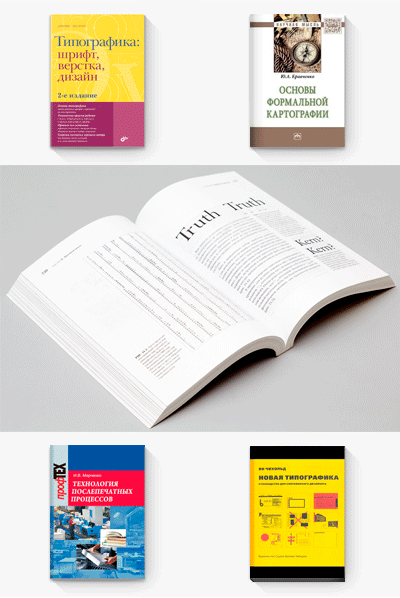